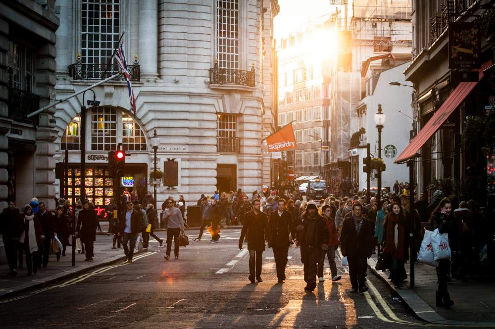

Whenever we’re in a state of resistance, we have a tendency to do things to make us feel better. When we're in a state of mild inner resistance, it can present as an urge to be elsewhere. We don't open up and settle into the moment. We aren't as receptive to those around us. As we covered before with The little patterns, when used in moderation, these coping strategies can give us a sense of inner ease. However, there can be a trap in this 'feeling better' game, particularly when it invloves doing things we don't really want to.

So why would we actually do things that we may not really want to be doing? This is a great question, and yet we often fall short in giving ourselves an answer. Instead, our minds tend to justify our actions when we're doing something primarily to feel better. This is also the case even when our actions are ones we later regret. Take the example of somebody who wants to quit smoking. Deep down this person may really want to quit. But when it comes round to the discomfort of cravings, having another cigarette is justified in one way or another. It feels better.
Below is a list of things that we may be inclined to do to distract ourselves from thinking or feeling a certain way. You may like to check with your own experience here to see if you can relate to similar things that you’ve done. And just a reminder, these are things that we all may do from time to time.
Distractions like eating, drinking, taking substances etc.
Having a good old gossip.
Ploughing into work.
Doing things to please or impress others.
Avoiding people, places and things you value (not doing something is still a behaviour!)
Indulging in shopping therapy.
Internet surfing, Facebook, watching the television and so on.
Now consider:
1) If you spend a lot of time doing these activities, as a way of distracting yourself from your inner experiences, is it possible that these strategies could get in the way of other meaningful areas of your life?
Maybe consider your time, energy, finances, physical health, mental well-being and your connection with others.
2) Although these strategies can make us feel better in the short-term, when you use them, do they get rid of your inner experiences in the long-term?
Quick fixes
They’re quick fixes, right? When we use them, we reward ourselves. They feel better only in the short-term. In the long-term, we can sometimes feel worse.
We all have strategies to reduce our unwanted feelings. But we can't get rid of them forever. I really want to emphasise a point here. It's not that using these strategies is bad. If they help you feel better, then it can be absolutely fine - but only in moderation. This is essential to know. Only when we use them to excess do we teach ourselves to do even more of them in the long-term.
And a really important point to emphasise here is:
The more time we spend doing things to get rid of or reduce our unwanted experiences, the less time we spend doing things that truly matter to us.
Tying all this together can look a little bit like this:
Q: What happens when we’re in a state of unrest?
A: Inner resistance builds.
Q: What do we have a tendency to do when we’re in a state of inner resistance?
A: We do more things that are not helpful to us, moving us away from the life we want to be living.
Q: What’s it like when we’re not fully living a life that we want to be living?
A: It can give us a feeling of unrest within.
The cycle completes once more.
The sentences above highlight the process of an inner resistance trap. Life becomes a game of escaping from ourselves and feeling better, but only temporarily. Now let's look at how this plays out for us in sometimes the most subtle and insidious ways.